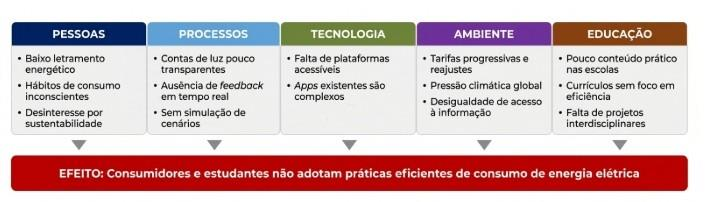
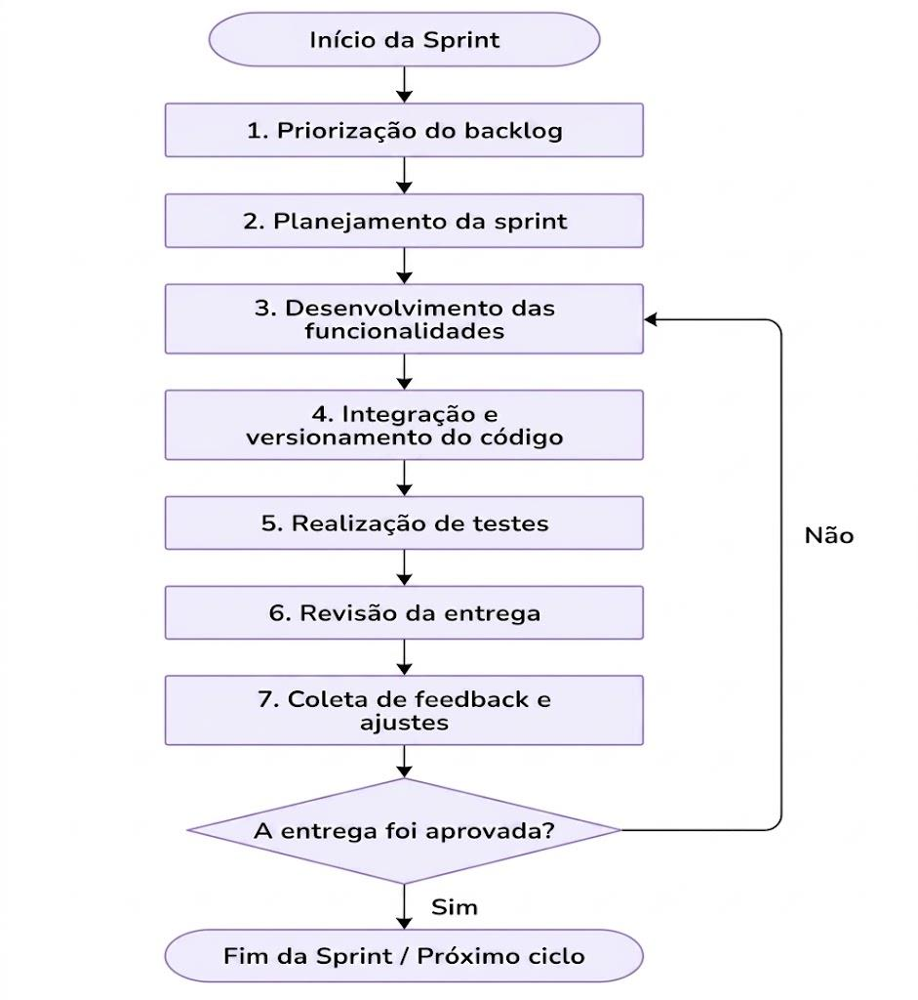
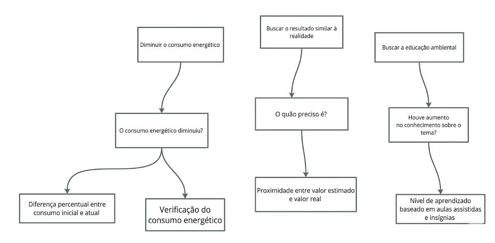

VISÃO DO PRODUTO E DO PROJETO
Versão 1.3
Tabela - Integrantes do Grupo:
| Matrícula | Nome | Função (responsabilidade) | Pontos de participação na elaboração |
|---|---|---|---|
| 242023210 | Alicia Doralice de Medeiros Maia | Dona do Produto - PO | 8.4 |
| 242023229 | Angeline Izaura de Lima Melo | Analista de Qualidade | 8.4 |
| 242015138 | Bruno Ferreira Dornelas | Desenvolvedor Backend | 8.4 |
| 242015773 | Caio Breno De Souza Bezerra | Analista de Qualidade | 8.4 |
| 261013753 | Danielly Reis dos Santos | Desenvolvedora Backend | 8.4 |
| 232002655 | Gabriel Martins de Jesus da Silva | Desenvolvedor Backend | 8.4 |
| 231034707 | Giovana Ferreira dos Santos | Desenvolvedora Frontend | 8.4 |
| 232003714 | Jônatas Davi Oliveira Farias | Desenvolvedor Backend | 8.4 |
| 242023990 | Jorge Henrique Torres Gargalhone | Desenvolvedor Backend | 8.4 |
| 251023602 | Kalebe Davi Sarmento da Silva | Desenvolvedor Backend | 8.4 |
| 242032460 | Leonardo Lopes Cruz | Desenvolvedor Frontend | 8.4 |
Histórico de Revisões
| Data | Versão | Descrição | Autor |
|---|---|---|---|
| 01/05/2026 | 1.0 | Versão inicial do documento, incluindo objetivos, escopo e requisitos principais | Alicia |
| 23/05/2026 | 1.1 | Alterações quanto as tecnologias usadas no desenvolvimento do frontend | Leonardo |
| 23/05/2026 | 1.1 | Alterações no backlog | Danielly |
| 23/05/2026 | 1.1 | Alteração de tudo relacionado a gamificação do documento. | Jônatas |
| 23/05/2026 | 1.1 | Alteração do tipo de banco de dados e do responsável pelos desenvolvedores. | Jorge |
| 30/05/2026 | 1.2 | Adiciona o Caio no FrontEnd | Leonardo |
| 06/06/2026 | 1.3 | Reorganização do documento de visão | Danielly |
1 VISÃO GERAL DO PRODUTO
1.1 Problema
1.1.1 Contexto
O setor elétrico brasileiro é marcado por tarifas progressivas e reajustes frequentes, que impactam diretamente o orçamento familiar. Segundo a Agência Nacional de Energia Elétrica (ANEEL), o consumo residencial representa parcela significativa da matriz de demanda do país, sendo também um dos segmentos com menor grau de conscientização sobre eficiência energética.
Em paralelo, a agenda climática global impõe pressão- crescente sobre governos, empresas e cidadãos para a redução das emissões de gases de efeito estufa e a adoção de fontes renováveis. Nesse cenário, as famílias brasileiras enfrentam um duplo desafio: reduzir o impacto financeiro da conta de energia elétrica e, ao mesmo tempo, contribuir para a sustentabilidade ambiental. Contudo, a maioria dos consumidores desconhece quais equipamentos domésticos mais contribuem para o consumo elevado, não tem acesso a ferramentas simples de simulação e raramente recebe educação formal sobre eficiência energética e fontes renováveis.
O contexto escolar agrava essa situação: educadores que desejam abordar temas de educação ambiental e consumo sustentável carecem de plataformas interativas e acessíveis para engajar alunos de forma prática e lúdica. Assim, o problema não é apenas técnico ou financeiro é também cultural e educacional.
1.1.2 Problema Identificado
O problema central pode ser enunciado da seguinte forma:
A falta de transparência e acessibilidade nas informações sobre consumo de energia elétrica, aliada à ausência de ferramentas educativas e engajadoras, impede que os consumidores residenciais e estudantes adotem comportamentos mais eficientes e sustentáveis.
Para melhor compreensão das causas e efeitos desse problema, apresenta-se a seguir o Diagrama de Ishikawa na Figura 1, também conhecido como Diagrama de Causa e Efeito ou Espinha de Peixe. Essa ferramenta permite visualizar de forma estruturada as múltiplas causas que contribuem para o problema central.
Figura 1 - Diagrama de Ishikawa do Problema Central do EducaEnergia

Fonte: EducaEnergia (2026)
A análise do Diagrama de Ishikawa conforme a Figura 1 revela que o problema possui causas distribuídas em cinco dimensões inter-relacionadas. No eixo Pessoas, destaca-se o baixo letramento energético e os hábitos de consumo inconscientes, que perpetuam o desperdicio mesmo entre consumidores com maior renda. No eixo Processos, a opacidade das contas de energia e a ausência de ferramentas de feedback em tempo real impedem que o consumidor compreenda exatamente onde ocorrem os maiores gastos.
No eixo Tecnologia, a carência de plataformas acessíveis e intuitivas que combinem simulação, educação e engajamento representa uma lacuna de mercado. Os aplicativos existentes tendem a ser técnicos demais para o público geral ou carecem de funcionalidades educativas. No eixo Ambiente, o contexto de tarifas progressivas e pressão climática global cria urgência para soluções que democratizem o acesso à informação energética. Por fim, no eixo Educação, a ausência de ferramentas pedagógicas práticas impede que escolas abordem o tema de forma eficaz e engajante.
O efeito resultante dessas causas é a persistência de padrões de consumo ineficientes, tanto no ambiente doméstico quanto no escolar, perpetuando o desperdício energético e o desalinhamento com os objetivos de desenvolvimento sustentável.
1.1.3 Solução de Software Proposta
A análise das causas identificadas conduz à proposta do EducaEnergia: uma plataforma web responsiva que integra dois pilares funcionais Simulação e Controle e Educação Ambiental em uma experiência única, acessível e engajadora.
A solução atua diretamente nas causas mapeadas: (i) combate o baixo letramento energético por meio de conteúdo educativo interativo; (ii) supre a ausência de transparência ao permitir o mapeamento detalhado dos aparelhos e a simulação do consumo residencial; (iii) preenche a lacuna tecnológica com uma interface intuitiva, projetada para usuários sem conhecimento técnico; (iv) responde ao contexto socioeconômico ao oferecer gratuitamente ferramentas que auxiliam famílias a reduzirem sua conta de luz; e (v) apoia o ambiente escolar com recursos pedagógicos que tornam o tema de sustentabilidade concreto e motivador.
Espera-se que a plataforma empodere o consumidor residencial com informações claras e acionáveis, reduza o desperdício energético por meio da mudança de hábitos, e contribua para a formação de uma geração mais consciente sobre sustentabilidade.
1.2 Declaração de Posição do Produto
A declaração de posição do produto, conforme apresentada no Quadro 1, sintetiza de forma estruturada a proposta de valor, o público-alvo e o diferencial competitivo do EducaEnergia. Este instrumento é amplamente utilizado na engenharia de requisitos para comunicar, de modo conciso, a essência do produto a todos os stakeholders.
Tabela 1 - Declaração de Posição do Produto
| Para: | Famílias brasileiras preocupadas com o valor da conta de luz; estudantes e educadores que buscam conteúdo prático sobre sustentabilidade e eficiência energética. |
|---|---|
| Necessidade: | Compreender e controlar o consumo de energia elétrica de forma simples, visual e educativa, promovendo a redução de gastos e a conscientização ambiental. |
| O Produto (EducaEnergia): | É uma aplicação WEB que integra simulação de consumo e educação ambiental em uma única plataforma responsiva e de acesso gratuito. |
| Que: | Permite ao usuário mapear os equipamentos domésticos, simular o consumo e o custo da conta de energia, aprender sobre eficiência energética e fontes renováveis, e engajar-se em quizzes que incentivam a mudança real de hábitos. |
| Ao contrário: | Das calculadoras de consumo isoladas (e.g., calculadora da ANEEL) e dos aplicativos de monitoramento proprietários das distribuidoras, que são fragmentados, não educativos e sem recursos de engajamento. Na ausência do EducaEnergia, o consumidor permanece sem uma visão integrada do seu consumo e sem motivação para mudar seus hábitos. |
| Nosso produto: | Diferencia-se por combinar, em uma mesma plataforma gratuita, a precisão da simulação energética, a profundidade do conteúdo educativo e o engajamento dos quizzes tornando o consumo consciente acessível para famílias e utilizável como recurso didático em contextos escolares. |
1.3 Objetivos do Produto
O objetivo principal do Educa Energia é desenvolver uma plataforma web responsiva que empodere consumidores residenciais e estudantes com ferramentas integradas de simulação de consumo energético e educação ambiental, promovendo a redução da conta de luz e a adoção de hábitos sustentáveis. Este objetivo central desdobra-se nos seguintes objetivos secundários, que orientam o desenvolvimento de cada módulo funcional da plataforma:
-
Objetivo 1 - Simulação e Controle: Permitir que o usuário cadastre os aparelhos elétricos de sua residência, informe o tempo de uso diário e obtenha uma previsão precisa do consumo mensal em kWh e do custo estimado da fatura, considerando as tarifas vigentes por região. O usuário deve ser capaz de identificar os "vilões" do consumo e simular cenários alternativos de uso.
-
Objetivo 2 - Educação Ambiental: Disponibilizar um módulo educativo com conteúdos sobre eficiência energética, fontes de energia renováveis, impactos ambientais do desperdício e medidas práticas de conservação, apresentados em linguagem acessível e com recursos visuais interativos. O módulo deve ser utilizável como material de apoio em contextos escolares.
-
Objetivo 3 - Engajamento: Implementar um sistema de desafios práticos com metas de redução de consumo, acúmulo de pontos, conquistas (badges) e ranking entre usuários. Os desafios devem ser contextualizados com horários de pico tarifário e boas práticas de uso eficiente, incentivando a mudança comportamental de forma lúdica e contínua.
-
Objetivo 4 - Acessibilidade e Usabilidade: Garantir que a plataforma seja responsiva (compatível com dispositivos móveis e desktops), de navegação intuitiva para usuários sem conhecimento técnico e de acesso gratuito, democratizando o acesso à informação energética.
-
Objetivo 5 - Impacto Mensurável: Permitir que o usuário acompanhe sua evolução ao longo do tempo, comparando o consumo histórico com as metas estabelecidas e visualizando o impacto financeiro e ambiental de suas escolhas.
Todos os objetivos estão alinhados à proposta de valor central do produto e às necessidades dos usuários identificadas na análise do problema. O desenvolvimento será iterativo, priorizando os objetivos 1 e 3 nas primeiras versões e expandindo progressivamente os demais módulos.
1.4 Tecnologias a Serem Utilizadas
A definição do Stack tecnológico do EducaEnergia foi pautada por critérios estratégicos que visam garantir a escalabilidade, a manutenibilidade e a eficiência do desenvolvimento. Os principais pilares para a seleção das ferramentas foram:
-
Compatibilidade e Responsividade: Adoção de tecnologias que assegurem uma experiência de usuário consistente tanto em dispositivos móveis quanto em desktops;
-
Viabilidade Técnica: Escolha de linguagens com curva de aprendizado compatível com o perfil da equipe, permitindo uma entrega ágil das funcionalidades;
-
Ecossistema de Bibliotecas: Priorização de ferramentas que ofereçam frameworks robustos para acelerar a implementação de módulos complexos, como a visualização dinâmica de dados energéticos;
-
Padronização e Engenharia: Alinhamento com as práticas modernas de engenharia de software, utilizando padrões de projeto e ferramentas de conteinerização.
A Tabela 2 consolida as tecnologias previstas para as diferentes camadas da solução. Ressalta-se que o detalhamento técnico da arquitetura, bem como o fluxo de interação entre esses componentes, será aprofundado no Documento de Arquitetura de Software em etapas subsequentes do cronograma.
Tabela 2 - Stack Tecnológico do Projeto Educa Energia
| Camada | Tecnologia/Ferramenta | Descrição e Justificativa |
|---|---|---|
| Frontend | HTML, CSS, JavaScript, React, Vite e TailWindCSS | Tecnologias fundamentais para a criação de uma interface web responsiva, garantindo que o EducaEnergia funcione em desktops e dispositivos móveis. |
| Backend | Python | Linguagem robusta e versátil, ideal para implementar a lógica de simulação energética com alta produtividade. |
| Persistência (Banco de dados) | PostgreSQL | Banco de dados baseado em SQL, linguagem utilizada para acessar, manipular e gerenciar dados. Foi adotado no projeto devido à familiaridade e facilidade de utilização pelos integrantes da equipe. |
| Infraestrutura/DevOps | Docker | Utilizado para a conteinerização da aplicação, garantindo que o ambiente de desenvolvimento seja idêntico ao de produção e facilitando o deploy. |
| Ambiente de desenvolvimento (IDE) | VS Code/Visual Studio | Ferramentas de desenvolvimento integradas que oferecem suporte nativo para as linguagens escolhidas e agilizam a depuração de código. |
| Padrão Arquitetural | MVC (Model-View-Controller) | Técnica de organização de software que separa a lógica de dados, a interface e o controle, facilitando a manutenção e a escalabilidade do sistema. |
2 VISÃO GERAL DO PROJETO
2.1 Ciclo de vida do projeto de desenvolvimento de software
Para o desenvolvimento da plataforma, será adotado um ciclo de vida iterativo e incremental, apoiado em uma abordagem ágil de desenvolvimento de software. Essa escolha se justifica pela natureza do produto, que envolve funcionalidades educativas, simulação de consumo energético e acompanhamento de resultados, exigindo validações constantes com os usuários finais.
A plataforma tem como proposta integrar três pilares principais: simulação e controle e educação ambiental, oferecendo ao usuário a possibilidade de mapear equipamentos domésticos, simular consumo e custo de energia e aprender sobre eficiência energética. Além disso, o produto tem como público-alvo famílias, estudantes e educadores, o que torna necessário um processo de desenvolvimento flexível, capaz de incorporar melhorias a partir de testes de usabilidade e feedback dos usuários.
Dessa forma, o ciclo de vida escolhido não será linear e rígido, como no modelo cascata, mas sim organizado em entregas progressivas, permitindo que partes funcionais da plataforma sejam desenvolvidas, testadas, avaliadas e aprimoradas ao longo do projeto.
2.1.1 Metodologia
A metodologia adotada será uma abordagem ágil, iterativa e incremental, com organização do trabalho em ciclos curtos de desenvolvimento. Cada ciclo terá como objetivo entregar uma parte funcional do sistema, possibilitando avaliação contínua da solução.
Essa metodologia é adequada ao projeto porque o problema identificado envolve não apenas uma necessidade técnica, mas também educacional e comportamental. Como o produto busca gerar engajamento e aprendizagem, é essencial testar a interface, os conteúdos ao longo do desenvolvimento.
2.1.2 Processo
O processo de desenvolvimento da plataforma será dividido nas seguintes etapas que é desejado serem alcançadas:
-
Levantamento e análise de requisitos: identificação das necessidades dos usuários, considerando famílias, estudantes e educadores. Nessa etapa, serão definidos os requisitos funcionais, como cadastro de aparelhos, cálculo de consumo, módulo educativo e requisitos como responsividade, acessibilidade, usabilidade e gratuidade.
-
Prototipação da interface: criação de telas iniciais da plataforma, priorizando uma navegação simples, visual e intuitiva. Como o público pode não possuir conhecimento técnico, a interface deverá facilitar a compreensão dos dados de consumo e tornar a experiência agradável.
-
Modelagem e arquitetura do sistema: organização da estrutura da aplicação, separando as responsabilidades entre modelo, visão e controle. Essa técnica favorece a manutenção do código, a organização do projeto e a evolução futura da plataforma.
-
Desenvolvimento incremental dos módulos: implementação dos módulos da plataforma por partes.
-
Testes e validação: realização de testes funcionais, testes de usabilidade e testes de compatibilidade em diferentes dispositivos. Essa etapa verificará se os cálculos estão corretos, se a navegação é intuitiva e se os recursos educativos realmente favorecem o engajamento.
2.1.3 Procedimento, métodos e ferramentas
Os procedimentos adotados no projeto serão organizados por ciclos de desenvolvimento, podendo ser representados por pequenas entregas ou versões da plataforma. Em cada ciclo, a equipe deverá planejar as funcionalidades, desenvolver, testar e revisar os resultados obtidos.
Tabela 3: Procedimentos, métodos e ferramentas
| Elemento | Aplicação |
|---|---|
| Metodologia | Desenvolvimento ágil, iterativo e incremental |
| Processo | Levantamento de requisitos, prototipação, modelagem, implementação, testes, implantação e manutenção |
| Técnicas de Desenvolvimento | Prototipação, testes de usabilidade, testes funcionais e versionamento |
| Linguagens | Python, JavaScript, HTML e CSS |
| Banco de Dados | PostgreSQL |
| Ferramentas | Docker, VS Code e Visual Studio |
| Produto Esperado | Plataforma web responsiva, educativa e gamificada |
A escolha das tecnologias está alinhada à proposta de criação de uma aplicação web responsiva, acessível e com potencial de expansão. O uso de HTML, CSS, JavaScript, React, Vite e TailwindCSS permitirá o desenvolvimento da interface visual e interativa da plataforma. O Python poderá ser utilizado na lógica da aplicação e no processamento das informações de consumo. O SQL será utilizado para armazenamento dos dados dos usuários, aparelhos cadastrados, consumo estimado, pontuações e conquistas. O Docker auxiliará na padronização do ambiente de desenvolvimento e implantação, reduzindo problemas de compatibilidade.
2.2 Organização do Projeto
Tabela 4: Atribuições da equipe
| Papel | Atribuições | Responsável | Participantes |
|---|---|---|---|
| Desenvolvedores | Codificar o produto, codificar testes unitários, realizar refatoração | Jorge | Danielly, Gabriel, Giovana, Leonardo, Bruno, Jônatas, Kalebe |
| Dona do Produto | Atualizar o escopo do produto, organizar o escopo das sprints, validar as entregas | Alicia | |
| Analista de Qualidade | Garantir a qualidade do produto, garantir o cumprimento do conceito de pronto, realizar inspeções de código | Angeline | Jonatas, Caio, Alicia |
| Cliente | Atualizar o escopo do produto, organizar o escopo das sprints, validar as entregas | Alicia |
2.3 Planejamento das Fases e/ou Iterações do Projeto
Tabela 5: Fases do projeto
| Sprint | Produto (Entrega) | Data Início | Data Fim | Entregável(eis) | Responsaveis | % conclusão |
|---|---|---|---|---|---|---|
| Sprint 1 | Definição do Produto | 25/04/2026 | 25/04/2026 | 100% | ||
| Sprint 2 | MVP e Planejamento do Projeto | 25/04/2026 | 01/05/2026 | 100% | ||
| Sprint 3 | C01/RF01 | 23/05/2026 | 01/05/2026 | Frontend: Tela de login e cadastro Backend: Login, cadastro e vínculo com banco de dados Testes de Software: Testes de funcionamento do login, cadastro e banco de dados |
Frontend: Leonardo, Giovana, Caio Backend: Danielly, Jorge, Jonata. Testes de Software: Danielly |
100% |
| Sprint 4 | RF02 | 06/06/2026 | 08/06/2026 | Frontend: Backend: Calculo medio de 3, 6 e 9 meses de gasto de energia. Testes de Software: Verficação da consistencia dos cálculos |
Frontend: Backend: Danielly, Jônatas, Jorge, Gabriel Testes de Software: Danielly, Gabriel |
90% |
2.4 Matriz de Comunicação
Tabela 6: Matriz de Comunicação
| Descrição | Area/ Envolvidos | Periodicidade | Produtos Gerados |
|---|---|---|---|
| Reunião de Planejamento | Equipe do Projeto (Desenvolvedores, PO e Qualidade) | Semanal | Backlog da Sprint e Metas definidas |
| Acompanhamento das Atividades | Equipe do Projeto | Semanal | Relatório da situação do Projeto |
| Alinhamento com Stakeholders | Equipe + Monitor | Quinzenal | Ata de Reunião de Relatório de situação |
| Sincronização Técnica (Code Review/Qualidade) | Desenvolvedores e Analistas de Qualidade | Contínua (por Pull Request) | Código revisado, testes unitários e logs de debug |
2.5 Gerenciamento de Riscos
Abaixo, listamos os principais riscos identificados para o contexto da FCTE e da disciplina de MDS:
Tabela 7: Principais riscos
| Categoria | Risco Identificado | Grau de Exposição | Plano de Mitigação | Plano de Contigencia |
|---|---|---|---|---|
| Técnico | Impedimentos de Infraestrutura: Falhas no Docker, SQLite ou ambiente de desenvolvimento. | Alto | Realizar a configuração do ambiente nas primeiras sprints e documentar o passo a passo no GitHub. | Se o progresso travar por mais de 1 sprint, priorizar a estabilização da base técnica antes de novas features. |
| Humano | Gargalos de Conhecimento: Dificuldade da equipe com Python, JavaScript ou versionamento (Git). | Médio | Realizar treinamentos internos e coletar feedbacks de adaptação à stack a cada sprint. | Redistribuir funções entre os membros ou simplificar a arquitetura proposta para reduzir a complexidade. |
| Técnico | Falha nos Testes / Baixa Cobertura: Erros críticos detectados apenas na fase de homologação. | Médio | Uso obrigatório de prefixos em commits e execução de pytest e npm test na branch develop | Realizar refatoração imediata e revisão por pares (Code Review) nos caminhos críticos do código. |
| Humano | Desfalque na Equipe: Ausência prolongada de membros em papéis chave (ex: Backend ou Qualidade). | Médio | Manter o código versionado e documentado para que outros desenvolvedores possam assumir as tarefas. | Replanejamento do cronograma da Sprint e redução do escopo do MVP para garantir a entrega. |
2.6 Critérios de Replanejamento
Esta seção estabelece os parâmetros necessários para a revisão das metas e prazos do projeto. O replanejamento não é visto como uma falha, mas como um ajuste estratégico necessário sempre que os indicadores de desempenho ou os riscos monitorados ultrapassarem os limites de tolerância definidos abaixo:
Os principais riscos, que caracterizam a necessidade de um replanejamento são:
-
Impedimentos de Infraestrutura (Risco Técnico): Se falhas na configuração do ambiente de desenvolvimento ou problemas com ferramentas de terceiros travarem o progresso da equipe por mais de 1 sprint, o plano de ação deve ser revisado para priorizar a estabilização da base técnica.
-
Gargalos de Conhecimento (Risco Humano): Sempre que a adaptação às tecnologias python, docker, versionamento de código, SQLite gerar atrasos sistemáticos em tarefas críticas, a gestão deve intervir para redistribuir funções ou simplificar a arquitetura proposta. A cada sprint devem ser coletados feedbacks quanto a adaptação à stacka atual.
-
Alteração de Requisitos Estratégicos (Risco de Negócio): Mudanças de prioridade solicitadas pelo gerente do projeto ou pelo cliente, que alterem o escopo principal e forçam o encerramento do plano atual ou uma mudança brusca e a criação de uma nova linha de base para o projeto.
3 PROCESSO DE DESENVOLVIMENTO DE SOFTWARE
O processo de desenvolvimento de software do EducaEnergia será orientado por uma abordagem ágil, iterativa e incremental, conforme definido na seção anterior. Para isso, serão utilizadas práticas baseadas no Scrum, voltadas à organização e acompanhamento do trabalho, e práticas do XP, voltadas à qualidade técnica do software.
O processo será organizado em ciclos curtos de desenvolvimento, chamados de sprints, com duração semanal. Em cada sprint, a equipe deverá planejar as atividades, implementar as funcionalidades priorizadas, realizar testes, revisar os resultados obtidos e ajustar o planejamento quando necessário. A cada ciclo, a equipe trabalhará com base no backlog do produto, selecionando os requisitos mais relevantes para a sprint. As funcionalidades serão desenvolvidas de forma incremental, permitindo que o produto evolua progressivamente e que as entregas possam ser avaliadas ao longo do projeto.
As práticas inspiradas no Scrum utilizadas pela equipe serão: * Organização do trabalho em sprints semanais; * Definição e priorização do backlog do produto; * Planejamento das atividades da sprint; * Acompanhamento frequente do andamento das tarefas; * Revisão das entregas ao final de cada ciclo; * Adaptação do planejamento conforme os resultados e dificuldades identificadas.
As práticas inspiradas no XP utilizadas pela equipe serão: * Desenvolvimento incremental das funcionalidades; * Refatoração do código sempre que necessário; * Realização de testes funcionais e de integração; * Padronização de commits; * Uso de versionamento de código; * Integração frequente das alterações realizadas pela equipe.
O fluxo geral do processo de desenvolvimento será composto pelas seguintes atividades:
-
Seleção dos requisitos prioritários no backlog;
-
Planejamento da sprint;
-
Desenvolvimento das funcionalidades;
-
Integração e versionamento do código;
-
Realização de testes;
-
Revisão da entrega;
-
Coleta de feedback e ajustes para o próximo ciclo.
Figura 2 - Diagrama do Fluxo de Trabalho

Fonte: EducaEnergia (2026)
4 DECLARAÇÃO DE ESCOPO DO PROJETO
4.1 Backlog do produto
Tabela 8: Matriz de Rastreabilidade de Requisitos.
| ID | Requisito | Cenário | Perfil | Priorização | Técnica de Elicitação |
|---|---|---|---|---|---|
| RF01 | Gestão de Acesso e Cadastro | C01 - Gestão de Acesso e Segurança | Usuário | Must | Brainstorming |
| RNF01 | Segurança e Privacidade de Dados | C01 - Gestão de Acesso e Segurança | Usuário | Must | Pesquisa Bibliográfica (LGPD) |
| RF03 | Interface do Simulador | C02 - Simulação de Consumo | Usuário | Must | Brainstorming |
| RF04 | Conteúdos Educativos | C03 - Jornada Educativa ODS 7 | Usuário | Must | Pesquisa Bibliográfica |
| RF05 | Quizes de Fixação | C03 - Jornada Educativa ODS 7 | Usuário | Must | Brainstorming |
| RF06 | Sistema de Emblemas | C04 - Reconhecimento por Metas | Usuário | Should | Brainstorming |
| RF07 | Relatório de Gastos | C05 - Análise de Gastos | Usuário | Should | Brainstorming |
| RF08 | Dicas de Sustentabilidade | C05 - Análise de Gastos | Usuário | Could | Brainstorming |
| RF09 | Painel de Gestão do Sistema | C01-Gestão de Acesso e Segurança | Administrador | Could | Reunião Técnica |
| RNF02 | Responsividade | C01 Gestão de Acesso e Segurança | Usuário | Should | Brainstorming |
4.2 Perfis
Tabela 9: Perfis de acesso
| # | Nome do perfil | Características do perfil | Permissões de acesso |
|---|---|---|---|
| P01 | Administrador | Responsável por manter os perfis e gerir o conteúdo educativo do site. | Manter usuários (criar/excluir), editar valores de potência de aparelhos no banco e cadastrar novos textos/quizzes. |
| P02 | Usuário | Responsável por aprender, simular e monitorar seus próprios hábitos. | Acessar/modificar perfil, realizar simulações, visualizar metas e conquistas (emblemas) e acessar conteúdos educativos e responder quizzes. |
4.3 Cenários
Tabela 10: Cenários funcionais
| Numeração do cenário | Nome do cenário | Sprints |
|---|---|---|
| C01 | Gestão de Acesso e Segurança | |
| C02 | Simulação de Consumo | |
| C03 | Jornada Educativa ODS 7 | |
| C04 | Reconhecimento por Metas | |
| C05 | Análise de Gastos |
4.4 Tabela de Backlog do Produto
Tabela 11: Backlog do produto
| Numeração (Cenário / requisito) | Sprint | Nome do requisito | Tipo de requisito (Funcional) | Priorização do requisito (Must, Should, Could) | Descrição suscinta do requisito | User histories (U.S.) associadas |
|---|---|---|---|---|---|---|
| RF01 | Login do usuario | Funcional | Must | Cadastro de conta, login e painel de gerenciamento de dados do usuário. | US01: Como usuário, quero criar uma conta para salvar meu progresso e emblemas. | |
| RF02 | Consumo Médio | Funcional | Must | Identificação do consumo geral da médio mensal de uso de kWh e visualização gráfica. | US02: Como usuário, quero ter acesso a média como referência do meu consumo. | |
| RF03 | Identificação de eletrodoméstico | Funcional | Must | Identificação dos eletrodomésticos que o usuário possui em sua residência. | US03: Como usuário, quero poder identificar os eletrodomésticos que possuo em minha residência dentro do aplicativo. | |
| C04/RF04 | Consumo médio dos eletrodomésticos | Funcional | Must | Estimar a média dos consumos de eletrodomésticos. | US04: Como usuário, quero saber o consumo médio dos brasilienses com os eletrodomésticos | |
| C05/RF05 | Cálculo médio | Funcional | Must | Retornar ao usuário seu consumo acima da média e recomendação de uso mensal para uma economia | US05: Como usuário, quero ver o valor estimado do meu consumo para entender o impacto financeiro. | |
| C06/RF06 | Quizes de Fixação | Funcional | Must | Testes interativos aplicados ao final de cada módulo para validar o aprendizado do aluno | US06: Como usuário, vou responder quizes para testar o que aprendi sobre sustentabilidade. | |
| C07/RF07 | Conteúdo Educativo | Funcional | Must | Disponibilização de módulos de leitura sobre eficiência energética, ODS 7 e formas de economizar. | US07: Como usuário, quero ler sobre fontes renováveis para aumentar meu letramento energético. | |
| C04/RF08 | Sistema de Emblemas | Funcional | Should | Concessão de emblemas por metas de uso ou acertos. | US07: Como usuário, quero ganhar emblemas por minhas metas para me manter engajado na economia. | |
| C05/RF9 | Relatório de Gastos | Funcional | Should | Histórico de simulações e dicas de economia. | US08: Como usuário, quero um resumo dos meus gastos para reduzir o valor da minha conta real. | |
| C01/RF10 | Painel Administrativo | Funcional | Could | Interface para o administrador gerir usuários, conteúdos educativos e o banco de aparelhos. | US09: Como admin, quero atualizar a potência dos aparelhos para manter o simulador preciso. |
5 MÉTRICAS E MEDIÇÕES
5.1 GQM de medições
Figura 3 - Diagrama GQM EducaEnergia

Fonte: EducaEnergia (2026)
5.2 Objetivo de medições
Tabela 12: objetivo de medições
| Objeto | Propósito | Foco | Ponto de Vista | Ambiente |
|---|---|---|---|---|
| Sistema de simulação de consumo energético | Avaliar a precisão e previsão | Precisão das estimativas | Usuários e equipe | Módulo de simulação |
| Módulo educacional | Avaliar a efetividade do aprendizado | Nível de aprendizado dos usuários | Usuários e Equipe | Módulo educacional |
| Detecção de consumo energético | Avaliar a redução do consumo e melhoria na precisão das previsões | Quantidade de consumo energético | Usuários e equipe | Módulo de detecção |
5.3 Questões
Tabela 13: 5W2H
| Questão | O quê | Por quê | Quem | Onde | Quando | Como |
|---|---|---|---|---|---|---|
| O consumo energético diminuiu? | Taxa de redução do consumo energético (%) / Dados do consumo | Verificar impacto da aplicação / Utilizar para comparação | Usuários e equipe | Plataforma | Mensal e anual | Comparação entre consumo inicial e atual / Obtendo os dados |
| Houve aumento no conhecimento sobre o tema? | Nível de aprendizado (%) | Avaliar efetividade educativa | Usuários e equipe | Plataforma | Mensal | Aulas concluídas / total de aulas |
| O quão preciso é? | Taxa de erro (%) | Avaliar confiabilidade | Usuários e equipe | Plataforma | Início e fim do ciclo(mês) | Diferença entre estimado e real |
5.4 Métricas
Tabela 14: Métricas
| Métrica | Definição | Cálculo | Unidade | Escala | Valor |
|---|---|---|---|---|---|
| Redução de consumo | Diferença percentual entre consumo inicial e atual | (Consumo inicial - Consumo atual)/ (Consumo inicial) x 100 | %(porcentagem) | Proporcional | $\ge5\%$ |
| Conhecimento sobre o tema | Nível de aprendizado baseado em aulas concluídas e insígnias | Aulas concluídas / (Total de aulas) X 100 | %(porcentagem) | Proporcional | $\ge20\%$ |
| Precisão | Proximidade entre valor estimado e valor real | Estimado - Real/ (Real) x 100 | %(porcentagem) | Proporcional | Erro < 25% |
| Verificação de consumo energético | A análise do consumo de energia elétrica | Potência (kW) x Tempo (h) | kWh(quilowatt-hora) | Proporcional | Igual ao consumo |
5.5 Formas de análise
- Identificação de padrões
- Comparação antes e depois
- Evolução ao longo do tempo
6 TESTES DE SOFTWARE
6.1 Níveis de Testes Abordados:
-
Unitário: Testes de funções Python (Lógica de negócios/services) e componentes JavaScript (UI).
-
Integração: Validação de comunicação entre o servidor Python e o banco, além de testes de endpoints (API).
-
Sistemas: Fluxo end-to-end (E2E) simulando a interação real do usuário com o sistema completo.
Tipos de testes abordados
- Funcionais: Testes de requisitos de negócio (ex: processamento de dados, autenticação).
Ambiente de testes usados
- Localmente: Visual Studio Code
- Remotamente: Github
Formas de Análise de Testes
A infraestrutura de testes está integrada ao fluxo de versionamento Git:
- Ambiente de Desenvolvimento: Localizado na branch develop. Commits disparam a execução de pytest e npm teste.
- Ambiente de Homologação: Localizado na branch stagin. Realização de testes de carga e testes de sistema.
- Política de Commits: Obrigatório o uso de prefixos (ex: fix, feat, test) para facilitar o rastreamento de mudanças que impactam os testes.
Formas de análise dos testes propostos
- Relatório de Sucesso: Verificando se o resultado "Realizado" condiz com o "Previsto".
- Análise de Cobertura: Uso de coverage.py (Python) e Instanbul/Jest (JS) para garantir que caminhos críticos do código foram testados.
- Logs de Debug: Captura de traces de erro em caso de falha no servidor ou no console do navegador.
Resultados Obtidos
CT01 (Cadastro de Usuário - E-mail Duplicado):
- Previsto: O sistema deveria impedir o cadastro e exibir um alerta visual de e-mail em uso.
- Realizado: O servidor retornou o status 400 e o Front-End renderizou o alerta conforme o esperado.
- Status: Pendente
CT02 (Alerta de Consumo de Watts):
- Previsto: O sistema deveria calcular o excedente com base na média e sugerir uma redução de horas de uso.
- Realizado: Identificou-se uma falha inicial na lógica de cálculo do Back-End (Python) e na formatação da mensagem no Front-End.
- Status: Pendente.
6.2 Roteiro de teste
Tabela 15: Resultados
| ID | Nome do teste | Objetivo do teste | Nível | Tipo | precondições | Aceite | Rejeite | Resultado | Reparo | Ciclos |
|---|---|---|---|---|---|---|---|---|---|---|
| CT01 | Cadastro de Usuário - E-mail Duplicado. | Validar se o Back-end bloqueia e o Front-end comunica a existência de e-mail já cadastrado. | Integração (Comunicação Front-Back) | Funcional | O e-mail teste@exemplo.com já deve estar cadastrado no banco de dados | servidor retorna status 409 e o JavaScript renderiza um alerta "Este e-mail já está em uso". | O servidor retorna status 201 (Created), permitindo a e-mail duplicado no banco de dados, ou o front-end não retorna erro. | Conforme esperado: O servidor retornou erro e o JS renderizou o alerta corretamente. | Revisar a query de verificação no banco de dados (Python/PostgreSQL) e garantir que o campo 'email' possua a constraint UNIQUE. | |
| CT02 | Alerta de Consumo de Watts | Validar a precisão do cálculo de excedente e a exibição de sugestão de redução. Back-End (python) e avisar onde mais está consumindo watts pelo Front-End(JS) | Unitários (cálculo feito por funções na comunicação) | Funcional | Média de consumo definida no BD; Comunicação ativa entre API (Python) e Interface (JS). | Exibição de alerta no Front-End indicando horas exatas a serem reduidas para retornar à média. | Retornar à quantidade errada de redução ou não obtiver o consumo claro de Watts do eletrodoméstico. | O sistema identificou o consumo excedente no Back-End, enviou o alerta ao Front-End e exibiu corretamente a sugestão de redução de horas de uso para o eletrodoméstico conforme a média calculada. | Caso o alerta não Revisar lógica de conversão Watts/Hora no módulo de cálculo do Python |
7 REFERÊNCIAS BIBLIOGRÁFICAS
-
AGÊNCIA NACIONAL DE ENERGIA ELÉTRICA (ANEEL). Informações sobre Tarifas. Brasília, DF: ANEEL, 2026. Disponível em: https://www.gov.br/aneel/pt-br/assuntos/tarifas. Acesso em: 28 de abril de 2026.
-
BRASIL. Lei nº 13.709, de 14 de agosto de 2018. Lei Geral de Proteção de Dados Pessoais (LGPD). Brasília, DF: Presidência da República, [2018]. Disponível em: https://www.planalto.gov.br/ccivil_03/_ato2015-2018/2018/lei/113709.htm. Acesso em: 28 de abril de 2026.
-
NAÇÕES UNIDAS BRASIL. Objetivo 7: Energia Limpa e Acessível. Brasília, DF: ONU, 2023. Disponível em: https://brasil.un.org/pt-br/sdgs/7. Acesso em: 24 de abril de 2026.
-
PRESSMAN, Roger S.; MAXIM, Bruce R. Engenharia de Software: uma abordagem profissional. 7. ed. Porto Alegre: AMGH, 2011.
-
ELFSM. Simulação de consumo. Disponível em: https://portal.elfsm.com.br/consumo/simulacao-de-consumo/. Acesso em: 7 maio 2026.
-
MINISTÉRIO DE MINAS E ENERGIA. Energia Limpa no Minha Casa, Minha Vida. Brasília, 2025. Disponível em: https://www.gov.br/mme/pt-br/brasil-lider-mundial-na-transicao-energetica/inclusao-social/energia-limpa-no-minha-casa-minha-vida. Acesso em: 7 maio 2026.